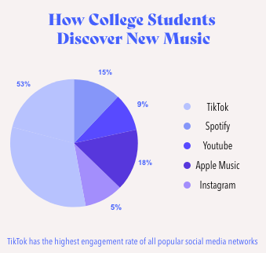

The Show Must Go On
By Lily Koller • 15 min read
From the onset of the pandemic in March of 2020, musicians, like the rest of the world, had their lives turned upside down. No more in-person shows, tours canceled, and artists were disconnected from their fans. Luckily, they were able to develop new ways to share their work to maintain a bond with their audiences through virtual shows and social media. Artists found new ways to keep their music alive, making all the difference to fans throughout quarantine.
Over the course of the pandemic, individuals had more time to listen to music than ever before. Fortunately, artists also had a lot of time at home to write new music to deliver to their fans. As things started to open back up again, they were eager to hear music live again; a concept many took for granted before. From both an artist and fan standpoint, concerts would now allow both parties to truly live in the moment and enjoy all that music has to offer.
There was much uncertainty along the way when it came to reopening venues. Should there be vaccine mandates? Covid-testing before events? Mask policies? While this is still up in the air from venue to venue, the one thing that remains stagnant is the love and passion for the art of music. People now listen to music in a way that they have never before.
TOP STORIES
The Return of Festivals in 2022
How TikTok is Helping & Hurting Young Artists
Grammy’s 2022 Forecast

Gen Z on Discovering New Music
Social Media Taking Over the Music Industry